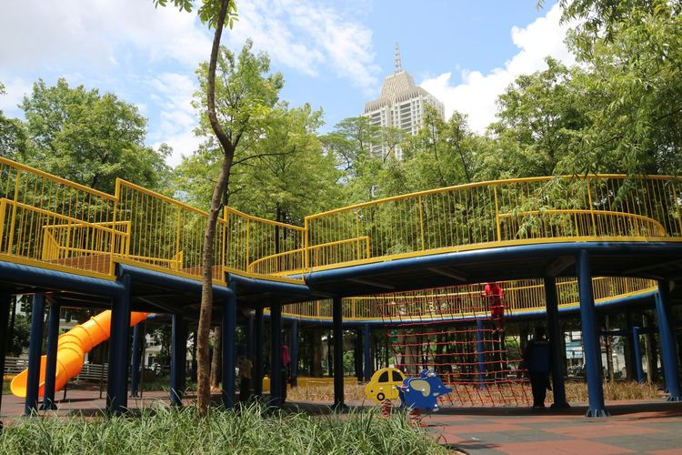
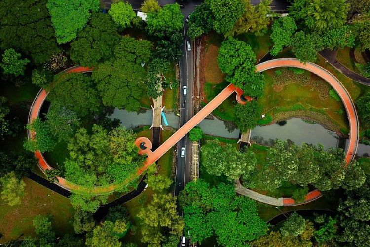
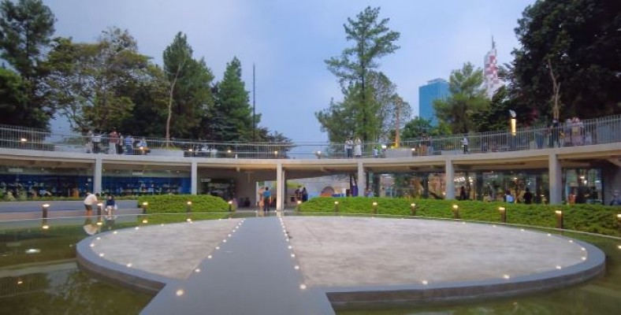

1. Taman Puring Park

Lokasi taman ini berada dekat dari pusat pembelanjaan taman puring dan mayestik. Lokasi pastinya ada
di Jl. Kyai Maja No.7, Rw.1, Kramat Pela, Kec. Kebayoran Baru, Kota Jakarta Selatan, Daerah Khusus
Ibokota Jakarta.
Taman ini terbuka untuk umum dan memiliki fasilitas taman, permainan anak, jogging track, dan tempat
bermain skate board. Pas Banget kan untuk kamu yang ingin produktif di akhir pekan bersama teman dan
keluarga.
2. Tebet Eco Park

Tebet Eco Park yang berada di bilangan tebet raya barat, jakarta Selatan ini menyediakan wahana
bermain anak-anak seperti trampolin, outbond, mainan pasir, perosotan, dan masih banyak lainnya.
Tebet Eco Park berbentuk taman yang sangat mengasyikkan. Tempat wisata ini sempat viral dan menjadi
bahan perbincangan karena desainnya yang unik dan keren.
3. Taman Literasi Martha Kristina Tiahahu

Taman ini berlokasi di Sisingamangaraja, Rt.03 Rw.01, Melawai, Kecamatan Kebayoran Baru, Kota Jakarta
Selatan, DKI Jakarta. Jam Bukanya adalah setiap hari, pukul 07.00 sampai 22.00 WIB.
Di taman literasi Martha Tiahahu ini kamu bisa membaca buku dengan suasana yang damai, menikmati
taman yang segar, hangout bareng teman, hingga belajar bersama di sana. Selain itu terdapat pula
galeri Jak Habitat, Paviliun, hingga ruang menyusui.